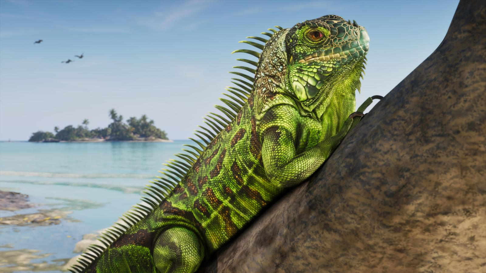

Leonida Keys в GTA 6: острова, где «жизнь не блестит, но легка»
Обновлено:

- Leonida Keys — цепочка тропических островов на юге Леониды.
- Прототип — Флорида-Кис: 1700 островов, связанных одним шоссе.
- Здесь живёт Джейсон: в доме контрабандиста Брайана Хедера.
- Rockstar: «дресс-код свободный, бары полные».
Что говорит Rockstar
«Дресс-код здесь свободный, бары полные. Жизнь на этом тропическом архипелаге не блестит, зато она лёгкая».
Rockstar Games, официальное описание Leonida Keys
Это самый спокойный регион Леониды, во всяком случае на словах. После неона Вайс-Сити и болот Grassrivers здесь рыбацкие лодки, деревянные бары на сваях и люди, которые никуда не спешат. Как Keys соотносится с другими регионами — в обзоре Карта GTA 6: штат Леонида и все регионы.

Keys в игре
Для сюжета Keys важны с самого начала. Здесь живёт Джейсон: после армии он работает на местных контрабандистов и живёт в доме Брайана Хедера (Джейсон Дюваль — главный герой GTA 6, Второстепенные персонажи GTA 6). Одну из улиц региона мы разбирали по кадру — Разбор кадра: улица в Leonida Keys.
Утро, лодочный причал. Пахнет бензином и рыбой, из бара на сваях играет радио. Брайан пьёт пиво в девять утра, а ты грузишь в лодку коробки, о которых лучше не спрашивать. Через час ты уже на шоссе над океаном: слева вода, справа вода, впереди только мост.
Шоссе над океаном
У настоящих Флорида-Кис главная достопримечательность — дорога. Заморское шоссе (Overseas Highway, часть трассы US 1) тянется от материка до Ки-Уэста примерно на 180 км по 42 мостам. Самый знаменитый из них, Семимильный мост, снимали во множестве фильмов.
Сначала через острова провели не шоссе, а железную дорогу. Магнат Генри Флаглер достроил её до Ки-Уэста в 1912 году. 2 сентября 1935 года по островам ударил ураган Дня труда, один из самых сильных в истории США на момент выхода на сушу, и смыл часть пути. Восстанавливать дорогу не стали: штат выкупил насыпи и мосты и в 1938 году пустил по ним автомобили. Шоссе, по которому сегодня едут туристы, стоит на костях железной дороги.
Ещё одна местная особенность — адреса. На Кис говорят не «улица и дом», а «миля 50»: вдоль трассы стоят зелёные столбики с номерами миль, от нулевой в Ки-Уэсте. Будут ли такие в игре, пока не видно, но Rockstar уже скопировала флоридские дорожные знаки («Расширенный показ» GTA 6: что показали за 26 минут — с таймкодами).
Остров, который объявил войну США
23 апреля 1982 года Ки-Уэст «вышел» из состава США. Пограничный патруль поставил на единственной дороге с островов пост с досмотром машин, туристы застряли в многочасовых пробках. Мэр Деннис Уордлоу в ответ провозгласил независимость Республики Раковины (Conch Republic), символически объявил войну США, через минуту сдался и попросил у Вашингтона миллиард долларов помощи. Пост вскоре убрали, а 23 апреля на Ки-Уэсте до сих пор отмечают «день независимости».
Это почти готовая миссия GTA, и именно такой юмор Rockstar любит: абсурд, который оказался правдой.

Олени размером с собаку
На острове Биг-Пайн-Ки живёт ключевой олень (Key deer), самый маленький олень Северной Америки, ростом примерно с крупную собаку. Вид под охраной, для него создан национальный заповедник. Будут ли карликовые олени в Леониде, неизвестно. Кого Rockstar уже показала — в статье Животные в GTA 6: кто живёт в Леониде.
Чего ждать
- Регион, скорее всего, связан с сюжетом Джейсона и контрабандой (по официальному описанию героя).
- Официальные кадры показывают воду, лодки, пляжи и бары. Размер региона Rockstar не называла.
- Новые скриншоты Game Informer №382 могут показать Keys подробнее. Дополним статью.
Другой регион Леониды, где тоже прошёлся ураган, — Port Gellhorn в GTA 6: забытое побережье Леониды.
Источники: Rockstar Games (официальное описание Leonida Keys; GTA Wiki); Florida Department of Transportation (Overseas Highway); NOAA (ураган Дня труда 1935); U.S. Fish and Wildlife Service (National Key Deer Refuge); история Conch Republic (1982).